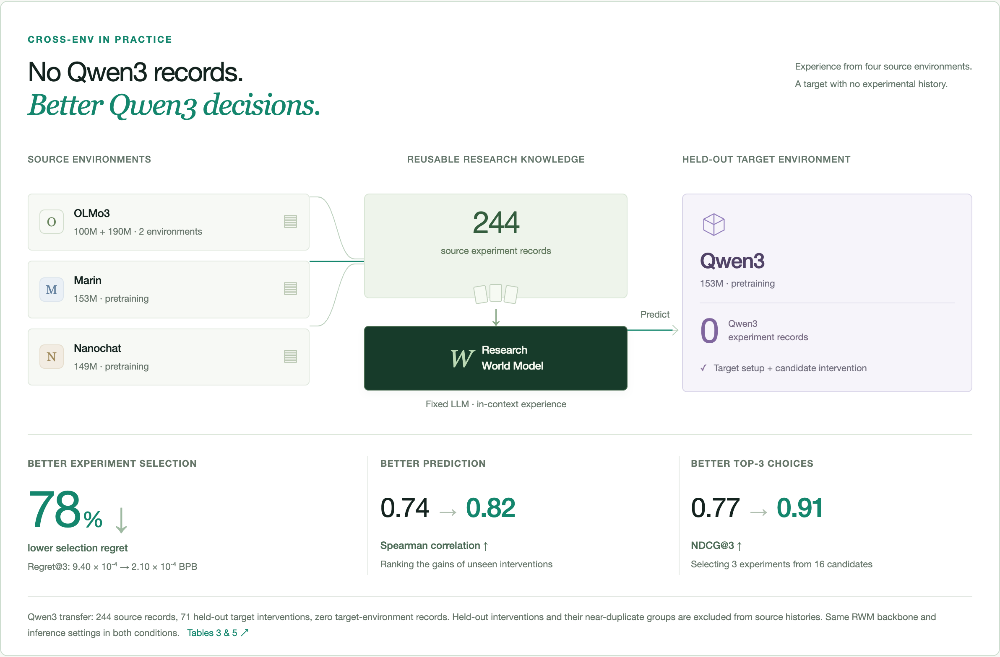

A world model
for AI research.
Can research taste be measured?
Research agents can propose far more experiments than anyone can afford to run. We give language models past experimental results and ask them to predict which new ideas are worth the compute.
models with 320 past experiment records beat the best model without them.
OLMo3-100M · 160 held-out queries · Spearman ρ Transfer 78% ↓lower selection regret on Qwen3-153M, using zero Qwen3 records — only experience from other setups.
Regret@3 · 244 source records Decisions +15.8%higher final best gain over 24 experiments when the search starts from past records.
Multi-round autoresearch · OLMo3-100MBuilt on 2,653 real experiment records · 9 research environments · 171,862 H100 GPU-hours. Model weights stay fixed; experience is supplied in context.
Predict the result before spending the compute.
A Research World Model (RWM) reads a research environment, a concrete code or recipe change, and records of past experiments, then predicts how much that change will help. The top predictions get run for real, and their outcomes become new records.
Experience changes the leaderboard.
Exact values for all 13 models
| Model | No records | 320 records | Δ | Rank |
|---|
OLMo3-100M, 160 held-out queries, HIGH effort where supported (Figure 3). Ranks use unrounded values. Download JSON
Experience transfers — and changes what gets run.
The harder test: predict in a setup the model has never seen records from. Qwen3-153M got zero target records; the RWM used 244 records from OLMo3, Marin and Nanochat. Held-out interventions and their near-duplicates were removed from the source data.

Mean Spearman over 5 pretraining targets using only other environments’ records. With same-environment records: 0.506 → 0.774.
Reduction in Regret@3 when choosing 3 of 16 candidates: 58.2% with in-environment records, 52.2% cross-environment.
Final best gain after 8 rounds × 3 picks, starting from in-environment or cross-environment records (no records = 100).
Where it breaks: cross-environment records improved prediction on all five pretraining targets, but experiment selection on only four. On Marin, ranking got better while the picks did not.
Lower regret means less gain lost by missing the best candidate — not less compute. Tables 2–5 and Figure 2 in the paper.
Nine research environments, real experiments.
See all 9 environments (2,653 records)
| Environment | Stage · outcome | Records |
|---|---|---|
| OLMo3 100M in-envcross-env | Pretraining · bits per byte ↓ | 480 |
| OLMo3 190M cross-env | Pretraining · bits per byte ↓ | 132 |
| Marin 153M cross-env | Pretraining · bits per byte ↓ | 132 |
| Nanochat 149M cross-env | Pretraining · bits per byte ↓ | 132 |
| Qwen3 153M cross-env | Pretraining · bits per byte ↓ | 132 |
| E2D2 170M (diffusion LM) in-env | Pretraining · bits per byte ↓ | 661 |
| Math distillation, Qwen3-1.7B in-env | Post-training · AIME24/25 avg@32 ↑ | 280 |
| Code RL, OLMo-3-7B in-env | Post-training · LiveCodeBench ↑ | 149 |
| Inference optimization, Gemma-4-E4B-it / vLLM in-env | Inference · quality-constrained tokens/s ↑ | 555 |
in-env: evaluated with records from the same environment. cross-env: target for transfer among the five autoregressive pretraining environments.
Every experiment does more than test an idea. It produces knowledge that can help choose the next one — even in another research environment.
Language Models as AI Research World Models
Wang*, Liu*, Lin, Weng, Shi, He, Sang, Wang, Dumoulin, Jin, Zhou, Xie, Lu · arXiv 2610.12235, 2026
@misc{wang2026languagemodelsairesearch,
title={Language Models as AI Research World Models},
author={Zijun Wang and Zewen Liu and Minhua Lin and Zhaotian Weng and Zhan Shi and Bing He and Yisi Sang and Dakuo Wang and Benoit Dumoulin and Wei Jin and Yuyin Zhou and Cihang Xie and Hanqing Lu},
year={2026},
eprint={2610.12235},
archivePrefix={arXiv},
primaryClass={cs.CL},
url={https://arxiv.org/abs/2610.12235}
}